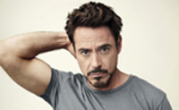
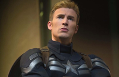
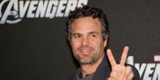
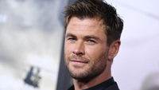

Robert Downey John Jr
 Robert Downey John Jr. adalah seorang aktor Amerika. Kariernya sudah termasuk keberhasilan dan kepopuleran di masa mudanya, diikuti dengan penyalahgunaan zat terlarang dan masalah hukum, serta kesuksesannya pada usia remaja.Robert Downey Jr. sebagai Tony Stark / Iron Man Jenius, miliarder, playboy, dan filantropis yang digambarkan sendiri dengan baju besi elektromekanis dari penemuannya sendiri. Downey dilemparkan sebagai bagian dari kesepakatan empat gambarnya dengan Marvel Studios, yang mencakup Iron Man 2 dan The Avengers.
Christopher Robert
 Christopher Robert "Chris" Evans adalah seorang aktor berkebangsaan Amerika Serikat. Ia bermain sebagai Cary Baston dalam serial televisi Opposite Sex, dan beralih menuju karier film serta membintangi beberapa hits, termasuk Not Another Teen Movie (2001), Fierce People (2005)Chris Evans sebagai Steve Rogers / Captain America Seorang veteran Perang Dunia II yang disempurnakan ke puncak fisik manusia oleh serum percobaan dan dibekukan dalam animasi yang tersuspensi sebelum terbangun di dunia modern. Evans dilemparkan sebagai bagian dari kesepakatan untuk membintangi tiga film Marvel, selain The Avengers.
Mark Alan Ruffalo
 Mark Alan Ruffalo adalah seorang aktor Amerika yang telah menerima berbagai penghargaan atas hasil kerjanya.Mark Ruffalo sebagai Bruce Banner / Hulk Seorang ilmuwan jenius yang, karena terpapar radiasi gamma, berubah menjadi monster saat marah atau gelisah. Ruffalo, yang dianggap memainkan Banner di The Incredible Hulk sebelum Edward Norton mengambil alih peran tersebut, dilemparkan setelah negosiasi antara Marvel dan Norton mogok. Untuk menciptakan suara Hulk, suara Ruffalo dicampur dengan suara Lou Ferrigno dan lainnya. namun, garis bicara Hulk saja ("dewa Puny") diberikan semata-mata oleh Ruffalo.
Chris Hemsworth
 Chris Hemsworth adalah aktor Australia. Ia dikenal atas perannya sebagai Thor dalam film-film Marvel Studios seperti Thor (2011), The Avengers (2012), dan Thor: The Dark World (2013); serta sebagai Kim Hyde dalam serial TV Australia, Home and Away (2004). Ia juga membintangi beberapa film lainnya seperti Star Trek (2009), A Perfect Getaway (2009), The Cabin in the Woods (2012), Snow White and the Huntsman (2012), Red Dawn (2012), dan Rush (2013). Hemsworth juga akan berperan dalam film adaptasi In the Heart of the Sea, yang diangkat dari buku karangan Nathaniel Philbrick.Chris Hemsworth sebagai Thor Putra mahkota Asgard, berdasarkan keilahian mitologi Norse dengan nama yang sama. Hemsworth dilemparkan sebagai bagian dari kesepakatan beberapa film. Sebelumnya dia pernah bekerja dengan Joss Whedon di The Cabin in the Woods. Hemsworth mengatakan bahwa ia mampu mempertahankan kekuatan yang ia bangun untuk Thor dengan meningkatkan asupan makanannya, terdiri dari dada ayam, ikan, steak, dan telur setiap hari.